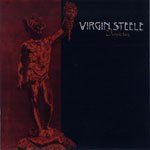

|
|
||
Virgin Steele : Invictus (1998) |
|

http://www.virgin-steele.com |
1. The Blood Of Vengeance 1:52 |
10/10 |
|
Los norteamericanos Virgin Steele llevan ya como veinte años de existencia y un importante número de álbums en su haber, pero quizás Invictus es su mejor obra hasta la fecha. Este disco tiene absolutamente de todo y además bien repartido. Una buena y variada base rítmica, interesantes solos, las aportaciones justas pero imprescindibes de los teclados, coros, cambios de tempo y de atmósfera y una voz, la de David DeFeis, capaz de los susurros más angustiosos y los gritos más aterradores. Además no hay ni una canción mala o de relleno, son setenta y cinco minutos de álbum que se hacen terriblemente cortos. El disco cuenta con un par de temas instrumentales cortitos que sirven como introducción al tema que les sigue, además de "The Blood of Vengeance", la inquietante y tenebrosa introducción al disco. A partir de ahí, todo son grandes canciones: "Invictus" con sus potentes riffs de guitarra, el ambiente épico, la voz desgarrada, los coros, los cambios de ritmo y el estribillo melodioso y pegadizo. Le sigue "Mind, Body, Spirit", canción épica, de guitarras graves y poderosas, un largo solo de guitarra de estilo bastante clásico y una parte lenta melodiosa que aporta un brillante contraste con el resto. El quinto corte, "Through Blood and Fire", es otra rápida, de ritmo marcado, gran variedad en la voz, y un estribillo melodioso y brillante. "Sword of the Gods" tiene una excelente base de teclados, y otro estribillo pegadizo, remarcado por la voz susurrante pero amenazadora y contundente de David DeFeis. "God of Our Sorrows" es una cortita balada acústica, muy del estilo de las de Manowar. El siguiente tema, "Vow of Honor", es una pequeña introducción al siguiente, cantada en un tono realmente alto. La novena pieza, "Defiance", es un tema excepcional, aderezado con riffs neoclásicos, unas guitarras densas que generan un impecable y pulsante soporte rítmico, y un estribillo como diálogo entre varias voces que es otro de esos momentos del disco que se recuerdan desde la primera vez que se escuchan. "Dust from the Burning" nos trae un heavy metal directo y más crudo que en el resto del disco, con un estribillo de nuevo como un diálogo con marcado contraste entre las voces, y un solo de guitarra equilibrado y que desataca muy bien sobre la base rítmica. "A Whisper of Death" comienza suave, desgarrada y muy apoyada en los teclados, pero luego cambia completamente para ser un tema directo y potente, con otro estribillo fabuloso. El decimotercer corte, "Dominion Day", tiene el arranque más pomposo del disco, pero luego adquiere un aire más crudo, que se suaviza en el estribillo. "A Shadow of Fear" es un tema inquietante, donde la voz es capaz de disputar en fiereza con las guitarras, incluso en el fantástico estribillo donde las guitarras finalmente se rinden y se limitan, junto a los teclados, a aportar la melodía. El disco lo cierra "Veni, Vidi, Vinci", un temazo épico, largo pero muy variado, con otro estribillo capaz de provocar escalofríos al más insensible, y un final increíble, pomposo y realmente espectacular. Este trabajo no sólo es un gran álbum, si no que está llamado a ser un clásico. Un disco que no puede faltar en la estantería de ningún aficionado al heavy metal. |
||
Rubén Béjar [crítica, revisión, álbum, disco, cd, review, heavy metal] |
||